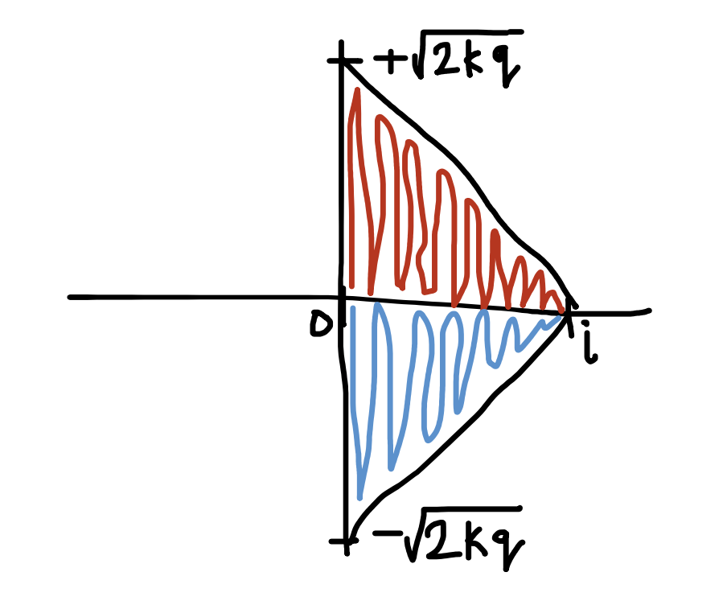

List Decoding of the Hadamard, Reed Solomon, and Parvaresh-Vardy Codes
Hi everyone! In this post, I would like to describe some error-correcting codes, and talk about the notion of unique decoding versus list decoding, and I'm going to do this over several examples of error correcting codes (namely, the binary Hadamard code, Reed Solomon code, Low-Density Parity-Check code, and Parvaresh-Vardy codes). The point of these examples is to drive in the usefulness of list decodings and to talk about the really cool results that have materialized in this field over the past few years.
An error-correcting code is a code that is used to fix errors in data that is transmitted over an unreliable channel. The concept was pioneered in the 1940s by the American Mathematician Richard Hamming with his invention of the Hamming (7, 4) code. Here is an intuitive geometric idea for how they work: consider a bunch of \(\mathbb{R}^n\)-spheres spread out in an n-dimensional space, where each sphere has a pretty well-defined center. The idea here is that the center of each sphere is a code-word. If this code-word gets distorted through the introduction of noise in the channel, one would expect a few of these bits to get flipped. The radius of each sphere is the maximum number of bits that can be flipped during transmission in this noisy channel (in other words, the number of incorrect bits) from where you can still deduce that the original message was actually the codeword that corresponds to the center of the sphere. So, at the receiving channel, any message that is contained within a sphere is mapped to its corresponding code-word. There are some pretty strong theoretical guarantees that these code-words can correct errors in messages with high probability. After all, in extremely noisy mediums, a word could become so distorted that it becomes another word entirely, and these level of catastrophic errors are truly unfixable at the receiving-side.
One thing to note is that the procedure (in all its abstractness, so far) truly describes a method to deduce a unique deterministic word from every message, which could have a high-probability of accuracy depending on the code-word used. This procedure is referred to as a unique decoding. However, in extreme cases it could be susceptible to catastrophic errors with a non-zero probability. To account for these cases, it is generally preferable to instead have an algorithm that outputs a vector with the most likely code-words (arranged in order of highest-probability to lowest-probability). List-decoding accomplishes exactly this - it takes a codeword at the receiver-side and extrapolates a list of the possible messages it might have referred to.
Throughout this section \(\mathbb{F}_2\) is the field with \(2\) elements (addition and multiplication are performed modulo \(2\)). Given a \(k\)-bit message \(m\), the associated Hadamard codeword \(C(m)\) is described by first producing a linear multivariate polynomial $$p_m(x_0, x_1, ..., x_{k-1}) = \sum\limits_{i=0}^{k-1} m_i x_i,$$ and then evaluating that polynomial at all vectors in the space \(\mathbb{F}_2^k:C(m)=(p_m(w))_{w\in\mathbb{F}_2^k}\). Thus the codeword has \(n = 2^k\) bits and the \(w\)-th bit is the inner product mod \(2\) of the \(k\)-bit vectors \(m\) and \(w\). The bits of a codeword \(C = C(m)\) are naturally indexed by \(\mathbb{F}_2^k\); we write \(C_w\) (with \(w\in\mathbb{F}_2^k\) to mean the \(w\)-th coordinate, which is just \(p_m(w)\). Since the distance of the Hadamard code is \((1/2)n\) (by the Schwartz-Zippel lemma which is a well-known result in theoretical computer science), unique decoding is only possible from up to \((1/4)n\) errors. My goal for this section is to show several things that culminate in the idea that efficient list-decoding is possible from a received word \(R\) that has suffered upto \((\frac{1}{2}-\epsilon)n\) errors, and to ultimately generalize this to a really strong statement in the form of the Goldreich-Levin theorem.
Firstly, consider the following probabilistic procedure. Pick \(\ell\) vectors \(v_1, v_2, ..., v_\ell \in \mathbb{F}_2^k\) independently and uniformly at random. For a subset \(S \subseteq \{1, 2, 3, ... \ell\}\) define \(u_S = \sum_{ùíä\in S} v_i\). Firstly, I'm going to show that for every non- empty set \(S\) and every \(\alpha\in\mathbb{F}_2^k\), we have \(\Pr[u_s=\alpha]=2^{-k}\). Secondly, I'm going to show that for every pair of non-empty subsets \(S\) and \(T\) with \(S \neq T\), and every \(\alpha, \beta \in \mathbb{F}_2^k\), we
have \(\Pr[u_s=\alpha \wedge u_t=\beta] = \Pr[u_s=\alpha] \Pr[u_t = \beta]\). In other words, the set of vectors \(u_S\) are pairwise independent random variables uniformly distributed on \(\mathbb{F}_2^k\).
Lemma 1: For every non-empty set \(S\) and every \(\alpha \in \mathbb{F}_2^k , \Pr[u_s = \alpha] = 2^{-k}.\)
To prove this, we derive inspiration from the principle of completing the Markov chain.
For every non-empty set \(S\subseteq \{1, 2, 3, ..., \ell\}\), let the last element in the chain from \(s\) be \(p\). It follows then that:
Then, if \(v_p\) is the last vector chosen (whatever \(p\) might be, so the process is i.i.d.), what is the probability of:
$$v_p = \alpha - \sum\limits_{i\in S-\{p\}} v_i$$
Then, since the other \(v_i\) were chosen independently, we just need to find \(\Pr[\alpha=c], c = (\alpha=v_p+\sum_{i\in S-\{p\}} v_i)\)
Here, \(c \mod k \in \mathbb{F}_2^k\). Since there are \(k\) digits of \(\alpha\), the probability that the bitwise subtraction fits the criteria for 1-bit is \(\frac{1}{2}\).
Across all bits, the probability is the product of the probability that each vector in \(\mathbb{F}_2^k\) fits the criteria (the vectors are iid).
Lemma 2: For every pair of non-empty subsets \(S\) and \(T\) with \(S \neq T\), and every \(\alpha, \beta \in \mathbb{F}_2^k\), we have:
$$\Pr[u_S = \alpha \wedge u_T = \beta] = \Pr[u_S = \alpha]\Pr[u_T = \beta]$$
Given an arbitrary pair of distinct non-empty subsets \(S\) and \(T\), we ‘complete the Markov chain’ as in lemma 1.
Let \(p\in S, p\notin T, q\in T, q\in S\) such that:
Suppose then that the received word \(R\) agrees with \(C = C(m)\) in at least a \(\frac{1}{2}+\epsilon\) fraction of its \(n\) bits. We can then observe that \(C_w + C_{w+e_i} = m_i\) (here, \(i\) is the \(i\)-th elementary vector in \(\mathbb{F}_2^k\) – the vector with \(1\) in the \(i\)-th position and zeros elsewhere). Of course, in our decoding algorithm, we do not have access to \(C\) to find \(C_w\) and \(C_{w+e_i}\). So, we will replace \(C_w\) with a “guess” (for now imagine it is always correct), and \(C_{w+e_i}\) with \(R_{w+e_i}\) (which may or may not be correct). We can then show that for all i, that:
$$ \Pr[|\{S\neq\Phi: C_{u_s}+R_{u_s+e_i}=m_i\}|\leq \frac{2^\ell-1}{2}] \leq \frac{1}{4\epsilon^2 (2^\ell-1)}$$
Let a family of indicator random variables for the event that \(R_{u_s+e_i} = C_{u_s+e_i}\) be \(L_s\) such that \(L_s\) be the number of bits for which the equality is met for the expression (on that particular value of \(S\)). Then, (rewriting the LHS of the probability statement using the indicator class) let \(L = \Sigma L_s\) such that \(S = \phi\). It follows then that:
$$ |\{S\neq\phi: C_{u_S}+R_{u_S+e_i} = m_i\}|=L$$
implies that
$$\Pr[|\{S\neq\phi: C_{u_S} + R_{u_s+e_i} = m_i\}| \leq \frac{2^\ell - 1}{2} = \Pr[ùêø \leq \frac{2^\ell-1}{2}]$$
To use Chebyshev’s inequality, we now have to determine \(\mathbb{E}[L]\), \(\mathbb{V}ar[L]\) which we will do from
\(\mathbb{E}[L_S], \mathbb{V}ar[L_S]\):
Since the received word \(R\) agrees with \(C = C(m)\) in at least a \(\frac{1}{2} + \epsilon\) fraction of its \(n\) bits (by assumption), we have that:
$$\mathbb{R}[L_S] ≥ \frac{1}{2} + \epsilon$$
Therefore, by the linearity of the expectation formula:
$$\mathbb{E}[L]=(2\ell −1)\mathbb{E}[L_S] \geq (\frac{1}{2}+\epsilon)(2^\ell −1)$$
Using the variance formula:
$$\mathbb{V}ar[L_S] = \mathbb{E}[L_S^2] − \mathbb{E}[L_S]^2$$
$$ = \sum\limits_S L_s^2 \Pr[R_{u_s+e_i}=C_{u_s+e_i}] - (\frac{1}{4}-\epsilon^2-\epsilon)_>$$
$$ = \frac{1}{2} - (\frac{1}{4} - \epsilon^2 - \epsilon)_> \leq \frac{1}{4}$$
$$ \mathbb{V}ar[L_S] \leq \frac{1}{4}$$
Then, using that the variance of the sum is equal to the sum of the variance (since \(L_S\) is pairwise independent) and since the length of the message composed from set \(S\subseteq \{1,2,3,...,\ell\}\) is \(2^\ell-1\), we have that (by the linearity of the variance for covariant distributions from separate random independent variables):
$$ \mathbb{V}ar[L] \leq \frac{2^\ell-1}{4}$$
(A brief sanity check: Note that in all cases equality is reached when \(\epsilon = 0\)). Now, recall Chebyshev’s inequality which states that:
$$ \Pr[L-\mathbb{E}[L]\leq k] ≤ \frac{\mathbb{V}ar[L]}{k^2}$$
Therefore,
$$ \Pr[L \leq \frac{2^\ell-1}{2}]=\Pr[L-\mathbb{E}[X]\leq \frac{2^\ell-1}{2} - \mathbb{E}[X]] $$
Using the Chebyshev inequality and our value of the variance as derived above (note that it is valid to use Chebyshev’s inequality since \(\epsilon(2^\ell − 1) \geq 0\) since \(\epsilon > 0\)), we have that:
$$ = \Pr[L-\mathbb{E}[X]\leq \epsilon(2^\ell-1)] \leq \frac{2^\ell-1}{4\epsilon^2(2^\ell-1)^2}$$
$$= \frac{1}{4\epsilon^2(2^\ell-1)}$$
Therefore, we conclude that:
$$\Pr[|\{S\neq\phi: C_{u_S} + R_{u_s+e_i} = m_i\}| \leq \frac{2^\ell - 1}{2} = \Pr[ùêø \leq \frac{2^\ell-1}{2}]$$
$$= \boxed{\frac{1}{4\epsilon^2(2^\ell-1)}}$$
QED.
I'm now going to describe a probabilistic procedure \(A\) that has the following behavior:
1) it has random access to a word \(R\) that agrees with \(C = C(m)\) in at least a \(\frac{1}{2}+\epsilon\) fraction of its \(n\) bits, and
2) it runs in time \(poly(k, \epsilon^{-1})\), and
3) with probability at least \(\frac{3}{4}\) it outputs a list of \(L=O(k\epsilon^{-2})\) “candidate messages” \(m_1, m_2, ..., m_L\) that includes the original message \(m\).
We can show that it takes surprisingly few bits to describe \((C_{u_S})_{S\neq\phi})\) by noting that the number of bits that would be chosen would be \(2^\ell\) so an appropriate (logarithmic) choice of \(\ell\) would make the number of bits drastically small. Therefore, let \(\ell= \log(k\epsilon^{-2} + 2)\). From this, we define the following probabilistic procedure \(A\):
A(input \(R\) = a word that agrees with \(C = C(m)\) in atleast a \(\frac{1}{2}+\epsilon\) fraction of its \(n\) bits (so the first property is satisfied)):
The total number of candidate choices for \(C_{v_i}\) is \(L = 2^\ell = 2^{\log k \epsilon^{-2} + 2} = k \epsilon^{-2} + 2 \in O(k\epsilon^{-2})\). Therefore, if we output a candidate message \(m_1\) for every candidate choice \(c_i\) and find a way to get the procedure to output the original message \(m\) (\(\frac{3}{4}\)ths of the time) in a procedure that runs in \(\text{poly}(k, \epsilon^{−1})\), then we are done.
Note here that the probability that \(\sum\limits_{i\in S} c_i + R_{u_S+e_j} = m_j\) is:
$$ \Pr[L\geq \frac{2^\ell-1}{2}] = 1 - \frac{1}{4\epsilon^2 k\epsilon^{-2}} = 1 - \frac{1}{4k}$$
Taking the union-bound of this probability for all \(k\) yields a union bound of \(\frac{3}{4}\). Therefore, if we append the majority bit (from all the \(S'\)) \(\sum_{i\in S} c_i + R_{u_s+e_j}\) to a
list \(B\) every time we guess the \(i\)’th candidate choice \(c_i\), and just return \(B\) at the very end, there is a probability of \(\frac{3}{4}\) that the original message would have been returned (since the majority of all
the \(S'\) in \(\sum_{i\in S} c_i + R_{u_s+e_j}=m_j\) is true \(\frac{3}{4}\) of the time). Therefore, the second property is satisfied.
Therefore, we now need to ensure that this procedure has a run-time of \(\text{poly}(k, \epsilon^{−1})\). To do this, note that the number of candidate choices for \(C_{v_i}\) is \(O(k\epsilon^{-2})\). Since this needs to be done for all \(v_i\) and since there are \(k\) many \(v_i\)‘s (and the comparison procedure only runs in \(O(1)\) with respect to \(k\)), we have that the total run-time is
$$O(k^2 \epsilon^{-2}) = \text{poly}(k^2, \epsilon^{−2}) = \text{poly}(k,\epsilon^{-1})$$
Therefore, the third property is satisfied.
Therefore, we have constructed a probabilistic procedure \(A\) that satisfies all the above properties. As desired.
QED.
Finally, I'm going to use all of this to prove something called the Goldreich-Levin theorem, which states that for every function family \(f_n: \{0,1\}^n \rightarrow \{0, 1\}^n\):
$$\text{GL}(x,y) = \sum\limits_{i=1}^n x_i y_i$$
is a hard bit for the function family \(f'_n:\{0, 1\}^n \times \{0, 1\}^n \rightarrow \{0, 1\}^{2n}\) defined by \(\mathcal{f}'(x, y) = (f(x), y)\). That is, if there is a circuit family \(\{C_n\}\) of size \(s(n) ≥ n\) that achieves:
$$\Pr\limits_{x,y}[C_n(x,y) = \text{GL}(\mathcal{f}_n'(x,y))] ≥ \frac{1}{2} + \epsilon(n)$$
then there is a circuit family \(\{C'_n\}\) of size \(s'(n)\) that achieves:
$$\Pr\limits_y[C'_n(x, y) = \mathcal{f}'_n(x, y)] \geq \epsilon'(n)$$
with \(s'(n) = (\frac{s(n)}{\epsilon(n)})^\text{O(1)}\) and \(\epsilon'(n) = (\frac{\epsilon(n)}{n})^\text{O(1)}\).
Let \(X\) be the class in which for all \(x \in X\), (where \(|X| \geq \frac{\epsilon(n)}{2}|X|\)):
$$\Pr\limits_y[C(x,y)=\text{GL}(f'_n(x,y))]\geq\frac{1}{2}+\frac{\epsilon(n)}{2}$$
We see then that \(\text{GL}(f'_n(x, y))\) is the \(y\)th bit of the codeword \(C(f_n(x))\), and that for all \(x \in X\):
$$C(f_n(x)) = C_n(x, y) \text{ agree on atleast } \frac{1}{2} + \frac{\epsilon(n)}{2} \text{ of its bits.}$$
Then, using the probabilistic procedure \(A\) that we defined earlier, we can assign the random word to be \(C_n\) such that on input \((x, y)\) we would get \((f_n(x), y)\) for all \(x\in X\), and that this would happen \(\frac{3}{4} \times \frac{1}{L}\) of the time, given that \(x\in X\). However, the probability that \(x\in X\) is \(\frac{\epsilon(n)+1}{2}\) (as described above).
Therefore, the total probability that \(A\) outputs \((f_n(x), y)\) is (using the fact that the probability of \(2\)
independent events happening is equal to the products of the probabilities of each event):
$$\epsilon'(n) = L\times \frac{3}{4} \times \frac{1}{\frac{\epsilon(n)+1}{2}}$$
$$\epsilon'(n) = O(\frac{\epsilon(n)^2}{n} \times \frac{1}{\frac{\epsilon(n)+1}{2}}$$
$$\epsilon'(n) = (\frac{\epsilon(n)}{n})^\text{O(1)}$$
Therefore, the probability that \(A\) outputs \((f_n(x),y) \geq (\frac{\epsilon(n)}{n})^\text{O(1)}\). Hence, we have that for the probabilistic procedure:
$$\epsilon'(n) = (\frac{\epsilon(n)}{n})^\text{O(1)}$$
To find the size of the circuit family, we can simply construct a circuit for each step in the run-time.
We already know that the run-time of the algorithm would be: \(\frac{1}{\epsilon'(n)} = (\frac{n}{\epsilon(n)})^\text{O(1)}\) since \(\Pr[C'(x, y) = f'_n(x, y)] \geq \epsilon'(n)\). Therefore, since \(s(n)>n\), we could use a circuit of size \(s(n)\) for each query (while \(n\) expecting atmost a quadratic increase in size by using Razborov's method for circuit-value finding). Hence, the associated size of the circuit would be:
$$s'(n) = (n\frac{s(n)}{\epsilon(n)})^\text{O(1)}$$
$$=(\frac{s(n)}{\epsilon(n)}^\text{O(1)}$$
Therefore, if there is a circuit family \(\{C_n\}\) of size \(s(n) \geq n\) that achieves: \(\Pr\limits{x,y}[C_n(x, y) = \text{GL}(f'_n(x, y))] ≥ \frac{1}{2} + \epsilon(n)\), then there is a circuit family \(\{C'_n\}\) of size \(s'(n)\) that achieves:
$$\Pr\limits_{x,y}[C'_n(x,y)=f_n'(x,y)]\geq \epsilon'(n)$$
with \(s'(n) = (\frac{s(n)}{\epsilon(n)})^\text{O(1)}\) and \(\epsilon'(n) = (\frac{\epsilon(n)}{n})^\text{O(1)}\).
Throughout this section \(\FF_q\) is the field with \(q\) elements. Given a \(k\)-bit message \(m\), the associated Reed-Solomon codeword \(C(m)\) is described by first producing a degree \(k−1\) polynomial \(p(x) = \sum_{i=0}^{k-1}m_i x^i\) and then evaluating that polynomial at all of the elements in the field \(\FF_q: C(m) = (p_m(w))_{w\in\FF_q}\). You should think of \(q\) as being polynomial in \(k\).
Now, we are given a received word \(R\) that has suffered \(e\) errors. We know that if \(e>\frac{q}{2}\), unique
decoding is impossible, since the distance of this code is a priori at most \(q\). However, we can still show that efficient list-decoding is possible as long as \(e\) is as large as \(q-\sqrt{2kq}\). If we choose, say,
\(q = k^2\), then this implies that we can recover from up to a \(1-o(1)\) fraction of errors.
So, firstly, let's view the received word \(R\) as a function \(R: \FF_q\rightarrow\FF_q\). We can then show that one can efficiently find a polynomial \(Q(x,y)\neq 0\) with \(x\)-degree at most \(\sqrt{q}\) and y-degree at most \(\sqrt{q}\) for which \(Q(w, R(w))=0\) for all \(w\in \FF_q\).
We can reduce the problem of finding a polynomial to just solving for the coefficients in the linear combination of all the elements in the monomial space of x and y. Therefore, a polynomial ùëÑ(ùë•, ùë¶) ‚↠0 with x-
degree at most ‚àöùëû and y-degree at most ‚àöùëû can be written as:
$$ Q(x,y) = \sum\limits_{\beta\in M} a_\beta \beta(x,y)$$
Where \(M\) is the set of all the possible monomials in \(x\) and \(y\) such that \(\max\limits_x(M) = \max\limits_y(M) = \sqrt{q}\). Therefore, including the \(0\)-degree monomials, we have that \(|M| = (\sqrt{q} + 1)^2 = q + 1 + \sqrt{2q}\). So, for all \(\omega \in \FF_q\), there are only \(|M|\) values (all the \(\alpha_\beta\)'s that need to be found in order to solve
$$Q(w,R(w)) = \sum\limits_{\alpha\in M} a_\alpha \alpha(w,R(w)) = 0$$
To find these \(|M|\) values, note that we can set up \(q\) equations for all the \(w\)‚Äôs. However, a system of linear equations with \(|M|\) variables and \(q\) equations can be solved by writing the system as a matrix equation in the basis of the monomial set \(M\) (since \(|M| > ùëû\)):
$$\begin{pmatrix}
\chi_1 & \chi_4 & \chi_6 & ...\\
\chi_2 & ... & \chi_7 & ... \\
\chi_3 & \chi_5 & \chi_8 & ...\\
... & ... & ... & ...\\
\end{pmatrix} *
\begin{pmatrix}
M[1] \\
M[2] \\
M[3] \\
...
\end{pmatrix}
=
\begin{pmatrix}
0 \\
0 \\
0 \\
...
\end{pmatrix}
$$
Then, by converting the matrix to row-echelon form, the Gauss-Jordan elimination method can be used to efficiently solve this matrix. Since this is an efficient matrix solution method (it runs in strongly polynomial time (from Jack Edmonds, 1967), it would efficiently find the coefficients to the polynomial that satisfies the linear equations. Therefore, we can efficiently find a polynomial \(Q(x,y)\neq 0\) with \(x\)-degree at most \(\sqrt{q}\) and \(y\)-
degree at most \(\sqrt{q}\) for which \(Q(w,R(w))=0\) for all \(\omega\in\FF_q\). Hence shown.
Next, let \(p:\FF_q\ra\FF_q\) be a polynomial of degree atmost \(k−1\) for which \(|\{w\in\FF_q: p(w)\neq R(w)\}|\leq q-t\). That is, \(p\) is a \(RS\) codeword that agrees with the received word \(R\) in at least \(t\) locations. I'm now going to show that if \(t>k\sqrt{q}\), then \((y−p(x))\) divides \(Q(x, y)\) to conclude that through using an efficient algorithm for factoring multivariate polynomials (which is known), we can find all codewords which have agreement \(t>k\sqrt{q}\) with \(R\).
We first show that the polynomial is identically \(0\) if \(t>k\sqrt{q}\). Note that \(Q(w,p(w))=0\) for all \(\omega\in\FF_q\) for which \(p(w)=R(w)\). The degree of the polynomial is \(\sqrt{q}+\sqrt{q} \text{(degree of p)}\) (since the degree of \(x\) and \(y\) are \(\sqrt{q}\). The degree of \(p\) is \(k-1\). Therefore, the degree of the polynomial is \(sqrt{q}+\sqrt{q}(k-1)=k\sqrt{q}\). Then, given that there are \(t>k\sqrt{q}\) possible values of \(w\) such that \(Q(w,p(w)) = 0\), we have from lecture that this polynomial (since it has more zeros than degrees) is a zero polynomial.
Now that we have established that \(Q(w,p(w))\) is a zero polynomial, we can view \(Q\) as a univariate polynomial in \(y\) with coefficients in \(\FF_q[x]\). We already know that \(p(w)\) is a root of \(Q\), so we can divide the polynomial by \(y-p(w)\) without any remainders from the divisor theorem. Therefore, given an efficient algorithm for factoring polynomials, every \(\text{RS}\) codeword \(p(w)\) such that \(p(w) = R(w)\) will be found as factors in the efficient factorization procedure.
Therefore, by simply reading the factors off from the factorization of the polynomial (to be precise, the factors are the codewords), we can find all the codewords which have an agreement \(t>k\sqrt{q}\) with \(R\).
QED.
Now, I'm going to do something slightly different. Define the \((1, k−1)\)-weighted degree of a polynomial \(Q(x, y) = \sum\limits_{i,j} q_{i,j}x^i y^i\) is defined to be \(\max\{i + (k − 1)j ∶ q_{i,j}\neq 0\}\). Using a similar analysis as earlier, we can show that one can find \(Q(x, y)\) with the required properties and with \((1, k−1)\)-weighted degree at most \(\sqrt{2kq}\), and therefore can tolerate agreement only \(t>\sqrt{2kq}\). To show that we can find \(Q(x, y)\) with a \((1, k − 1)\)-weighted degree of \(\sqrt{2kq}\), we must check that there are greater than \(q\) possible pairs \((i, j)\) such that \(i + (k − 1)j \leq \sqrt{2kq}\), and then use some of the analyses from earlier to find \(Q(x,y)\) with the required properties.
Then, we can construct a triangle by noting that all the pairs \((i,j)\) such that \(0 \leq i \leq \sqrt{2kq}\) and \(0 \leq j \leq \sqrt{2kq}\). Then, we have that:

Therefore, (if you take only integer points) there are \(\frac{2kq}{k-1}\) satisfying points in the \(x\)-axis in total from which atleast half (\(\geq \frac{kq}{k-1})\) of these pairs satisfy the \(y\)-axis inequality. Therefore, there are \(\frac{kq}{k-1}\) points that solve the inequality \(i+(k-1)j\leq \sqrt{2kq}\). When you include non-integers, the number of points increases but the number of solution points for the inequality is still
$$
\geq \frac{1}{2} \frac{2kq}{k-1} = \frac{kq}{q-1} = \frac{q}{1-\frac{1}{k}} > q$$
Hence, we now have \(q\) points that satisfy the weighted polynomial. The degree of the polynomial is \(\max\{i + (k − 1)j\} = \sqrt{2kq}\) and since \(t>\sqrt{2kq}\), we now have that \(Q\) is a \(0\)-polynomial.
We already know that \(p(w)\) is a root of \(Q\), so we can divide the polynomial by \(y-p(w)\) without any remainders from the divisor theorem. Therefore, given an efficient algorithm for factoring polynomials, every Reed-Solomon codeword \(p(w)\) such that \(p(w) = R(w)\) will be found as factors in the efficient factorization procedure.
Therefore, by simply reading the factors off from the factorization of the polynomial, we can find all the codewords which have an agreement \(t>\sqrt{2kq}\) with \(R\).
QED.
Throughout this section \(\FF_q\) is the field with \(q\) elements. We have an integer parameter \(c \geq 1\), and we fix a polynomial \(E(x)\) of degree \(k\), that is irreducible over \(\FF_q\). Set \(h = ⌈(q + 1)^\frac{1}{c+1}⌉\). Then, given a \(k\)-bit message \(m\), the associated Parvaresh-Vardy codeword \(C(m)\) is described as follows:
1) Produce the degree \(k−1\) polynomial \(p_m(x) = \sum_{i=0}^{k-1} m_ix^i\)
2) define \(p_m^{(i)}(x)\) to be the polynomial \((p_m(x))^{h_i} \mod E(x)\), for \(i = 0, 1, 2, ..., c−1\). Note that \(p_m^{(0)}(x)\) is just \(p_m(x)\)
3) the codeword \(C(m)\) is the following sequence of symbols in
$$\mathbb{F}^c_q: ([p_m^{(0)}(w), p_m^{(1)}(w), ..., p_m^{(c-1)}(w)])_{w\in \FF_q}$$
Now, we are given a received word \(R\) that has suffered \(e\) errors. You will show that list-decoding is possible for Parvaresh-Vardy codes when \(e\) is as large as \(q−(c+ 1)kh\). Note, for example, that when taking \(c = \log q\),
we require agreement only \(\approx k \log q\), in contrast to the \(\approx \sqrt{kq}\) achievable with Reed-Solomon codes (typically, \(q\) is a large polynomial in \(k\)).
Fistly, we view the received word \(R\) as a function \(R: \FF_q \ra \FF_q^c\). Show that one can efficiently find a
polynomial \(Q(x, y_0, y_1, ..., y_{c-1} \neq 0\) with individual variable degrees at most \(h−1\) for which \(Q(w,R(w)_0, ..., R(w)_{c-1}) = 0\) for all \(w \in \FF_q\).
We can reduce the problem of finding a polynomial to just solving for the coefficients in the linear combination of all the elements in the monomial space of \(x, y_0, y_1, ..., y_{c-1}\). A polynomial \(Q(x, y_0, y_1, ..., y_{c-1})\) with individual variable degrees atmost \(h - 1\) can be written as:
$$ Q(x, y_0, y_1, ..., y_{c-1}) = \sum_{\beta\in M} \alpha_\beta \beta(x, y_0, y_1, ..., y_{c-1}), \beta\in M$$
Here, \(M\) is the set of all the possible monomials in \(x, y_0, y_1, ..., y_{c-1}\) such that
$$ \max\limits_x(M) = \max\limits_{y_0}(M) = \max\limits_{y_1}(M) = ... = \max\limits_{y_{c-1}}(M) = h − 1.$$
Therefore, including the 0-degree monomials, we have that \(|M| = h^{c+1}\). So, for all \(\omega \in \FF_q\), there are only \(|M|\) values (all the \(\alpha_\beta\)'s) that need to be found in order to solve \(Q(w, R(w)_0, ..., R(w)_{c-1})=0\).
To find these \(|M|\) values, note that we can set up \(q\) equations for all the \(w\)’s. However, a system of linear equations with \(|M|\) variables and \(q\) equations can then be solved by writing the system as a matrix equation in the basis of the monomial set \(M\) (since \(|M| > q)\):
$$\begin{pmatrix}
\chi_1 & \chi_4 & \chi_6 & ...\\
\chi_2 & ... & \chi_7 & ... \\
\chi_3 & \chi_5 & \chi_8 & ...\\
... & ... & ... & ...\\
\end{pmatrix} *
\begin{pmatrix}
M[1] \\
M[2] \\
M[3] \\
...
\end{pmatrix}
=
\begin{pmatrix}
0 \\
0 \\
0 \\
...
\end{pmatrix}
$$
Then, by converting the matrix to row-echelon form, the Gauss-Jordan elimination method can be used to efficiently solve this matrix. Since this is an efficient matrix solution method (from Jack Edmonds, 1967), it would efficiently find the coefficients to the polynomial that satisfies the linear equations. Therefore, we can efficiently find a polynomial \(Q(x, y_0, y_1, ..., y_{c-1})\neq 0\) with individual variable degrees at most \(h−1\) for which \(Q(w,R(w)_0, ..., R(w)_{c-1})=0\) for all \(w\in\FF_q\).
Hence shown.
Next, let \(p:\FF_q\ra\FF_q\) be a polynomial of degree at most \(k−1\) for which
$$|\{\omega \in \FF_q: [p^{(0)}(w), p^{(1)}(\omega), ..., p^{(c−1)}(\omega)] \neq R(\omega)\}| ≤ q-t$$
That is, \(p\) is a Parvaresh-Vardy codeword that agrees with the received word \(R\) in atleast \(t\) locations. I'm now going to show a pretty neat result: that, if \(t > (c+ 1)kh\) then the polynomial
$$Q(x, p^{(0)}(x), p^{(1)}(x), ..., p^{(c−1)}(x))$$
is the zero polynomial.
We first show that the polynomial is identically \(0\) if \(t > (c + 1)kh\). Note that
$$Q(x, p^{(0)}(\omega), p^{(1)}(\omega), ..., p^{(c−1)}(\omega)) = 0$$
for all \(\omega \in \FF_q\) for which
$$ p^{(0)}(\omega) = p^{(1)}(\omega) = ⋯ =p^{(c-1)}(\omega) = R(\omega)$$
The degree of the polynomial \(Q\) is \(≤ (h − 1) + c(h − 1)(k − 1)\) (since the degree of \(x\) and each \(y\) are atmost \(h − 1\), the degree of \(p\) is \(k − 1\), and there are \(c\) many \(y\)’s. Therefore,
$$\begin{align*}
\text{degree}_Q &\leq (h-1) + c(h-1)(k-1) \\
&= chk + h + c - (ck + ch + 1) \\
&< chk + kh \\
&= kh(c+1)
\end{align*}
$$
Then, given that there are \(t > (c + 1)kh\) possible values of \(w\) such that \(Q\) evaluated on \(w=0\), we have from lecture that this polynomial (since it has more zeros than degrees) is a zero polynomial.
QED.
Finally, recall that \(\frac{\FF_q[x]}{E(x)}\) – the set of univariate polynomials with coefficients in \(\FF_q\) and with multiplication and addition performed modulo \(E(x)\) – is a field. Define the following polynomial with coefficients in this field:
$$ Q^*(z) = Q(x,z,z^h,z^{h^2}, ..., z^{h^{c-1}}) \mod E(x)$$
Assuming the existence of an efficient algorithm that outputs all of the roots of a given univariate polynomial with coefficients in \(\frac{\FF_q[x]}{E(x)}\), and making reference to \(Q^*\), we can argue that one can efficiently find all \(E(x)\) Parvaresh-Vardy codewords which have agreement \(t > (c+ 1)kh\) with \(R\).
We first prove the following lemma:
Lemma 1 : For all \(p: \FF_q \ra \FF_q\) such that \(p^{(0)}(\omega) = p^{(1)}(\omega) = ... = p^{(c-1)}(\omega) = R(\omega)\) is true for \(t>(c+1)kh\) bits, \(p(w)\) is a root of the polynomial \(Q^*(z) = Q(x,z,z^h,z^{h^2}, ...,z^{h^{c-1}}) \mod E(x)\)
To show that:
$$Q(w,p(w))^{h^0}, (p(w))^{h^1}, ..., (p(w))^{h^{c-1}}) \mod E(w) \equiv 0$$
We consider the LHS,
$$Q(w,p(w))^{h^0}, (p(w))^{h^1}, ..., (p(w))^{h^{c-1}}) \mod E(w)$$
However, from the composite modulo principle, this is equivalent to:
$$ Q(w,p(w))^{h^0} \mod E(w), (p(w))^{h^1} \mod E(w), ..., (p(w))^{h^{c-1}} \mod E(w))$$
$$= Q(w, p(w)^{(0)}, (p(w))^{(1)}, ..., (p(w))^{(c−1)})$$
However, since we already know that \(Q(w, p^{(0)}(w), p^{(1)}(w), ..., p^{(c−1)}(w))\) is identically \(0\). Therefore, it follows then that \(p(\omega\)) is a root of the polynomial \(Q^*\). Hence shown.
We now have that \(p(w)\) is a root of the polynomial \(Q^*\). The degree of the polynomial \(Q^*\) is:
$$\text{degree} \leq (\text{degree}_p)(1 + h + h^2 + ... + h^{c-1})$$
$$\text{degree} \leq (h − 1)(1 + h + h^2 + ... + h^{c-1})$$
$$ = h + h^2 + h^3 + ... + h^{c} -1 − h − h^2 − h^3 − ... − h^{c−1}$$
$$ h^c - 1 = q$$
Therefore, given an efficient algorithm that outputs all the roots of a given univariate polynomial with coefficients \(\frac{\FF_q[x]}{E(x)}\), we can find all the roots of \(Q^*\) (which would still be polynomials) (through the way in which we have just found one of the roots). These polynomial solutions would contain every bit of the Parvaresh-Vardy coded message that satisfies the criteria of having an agreement \(t>(c+1)kh\) with \(R\). Therefore, by simply reading the roots, we can find all the codewords which have an agreement \(t>(c+1)kh\) with \(R\).